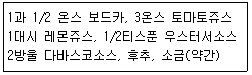
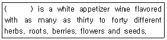
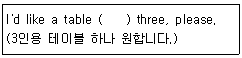
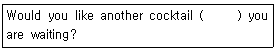
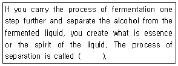
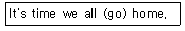

조주기능사 (2002-04-07 기출문제)
1과목: 주류학개론
1. 다음 중 식후주(after drink)로 많이 마시는 것은?
- 올드 테일러(Old Taylor)
- 비휘터(Beefeater)
- 헤네씨(Hennessy)
- 렐스카(Relska)
(정답률: 50%)

2. 다음 술 중에서 증류주가 아닌 것은?
- 보드카(Vodka)
- 샴페인(Champagne)
- 진(Gin)
- 럼(Rum)
(정답률: 86%)
3. 다음 중 스카치 위스키는?
- Vermouth
- Canadian club
- Black and white
- Hennessy V.S.O.P
(정답률: 35%)
4. 다음 중 멕시코산 증류주는?
- Irish whisky
- Tequila
- Bourbon
- White horse
(정답률: 90%)
5. 다음 사항 중 혼성주에 속하는 것은?
- London dry gin
- Creme de Cacao
- Schnaps
- Moet et Chandon
(정답률: 68%)
6. 다음 중 쉐리(Sherry)에 대하여 맞게 쓴 것은?
- 스페인산 백포도주
- 불란서산 백포도주
- 이태리산 백포도주
- 독일산 백포도주
(정답률: 60%)
7. 순수한 자연 그대로의 포도만으로 양조한 비포말성 와인으로 알코올 함유량이 14° 이하인 것은?
- Sparkling wine
- Fortified wine
- Aromatized wine
- Natural still wine
(정답률: 76%)
8. 칼바도스(calvados)는?
- 불란서 보르도산 백포도주
- 사과로부터 만든 증류주
- 불란서산 드라이 진의 상표
- 아이리쉬 위스키의 일종
(정답률: 67%)
9. Dom perignon은 다음 중 무엇과 관계가 있는가?
- Champagne
- Bordeaux
- Martini Rossi
- Menu
(정답률: 80%)
10. 바카디 칵테일(Bacardi cocktail)을 스트레이트 엎(straight up)상태로 제공시 알맞는 서어브 온도는?
- 3℃ 정도
- 6℃ 정도
- 9℃ 정도
- 12℃ 정도
(정답률: 28%)
11. 다음의 내용물로 조주하는 칵테일은?

- 비엔비(B & B)
- 블루디메리(Bloody mary)
- 블랙러시안(Black Russian)
- 다이커리(Daiquiri)
(정답률: 85%)
12. Dry Martini를 만드는 방법은?
- Mix
- Stir
- Shake
- Float
(정답률: 68%)
13. 레드 와인 제조 과정이 가장 알맞게 연결된 것은?
- 수확-분쇄-압착-발효-숙성-여과-병입
- 수확-분쇄-발효-압착-숙성-여과-병입
- 수확-분쇄-압착-숙성-발효-여과-병입
- 수확-압착-분쇄-발효-숙성-여과-병입
(정답률: 40%)
14. 다음 Cocktail의 종류 중 작품 완성 후 Nutmeg을 뿌려 제공하는 것은?
- Eggnog
- Fizz
- Sour
- Sling
(정답률: 91%)
15. Daiquiri Frozen의 주재료와 부재료는 어느 것인가?
- Grenadine 과 Lime juice
- Vodka 와 Lime juice
- Rum 과 Lime juice
- Brandy 와 Grenadine
(정답률: 48%)
16. 드라이 마티니(Martini) 칵테일의 장식은?
- 체리(Cherry)
- 올리브(Olive)
- 오렌지(Sliced Orange)
- 너트맥(Nutmeg)
(정답률: 78%)
17. 레몬이나 오렌지의 과즙(果汁)을 짜내는 기구 명칭인 "스퀴저"의 올바른 영문 표기는?
- Squeezer
- Sqweezer
- Squizer
- Sqwizer
(정답률: 62%)
18. 칵테일(cocktail) 조주용 기구와 직접 관계 없는 것은?
- 트레이(tray)
- 콜크 스크류(cork screw)
- 아이스 픽(ice pick)
- 메저컵(measure cup)
(정답률: 49%)
19. American whisky "86 proof"는 우리나라의 주정 도수로는 몇도인가?
- 23도
- 33도
- 43도
- 53도
(정답률: 94%)
20. 다음 계량단위 중 옳은 것은?
- Pony = Ounce
- Dash = Drop
- Jigger = Quart
- Pint = Split
(정답률: 58%)
21. 다음 중 Bourbon Whiskey는 어느 것인가?
- Jim Beam
- Ballantine's
- Black Bushmill
- Bombay
(정답률: 65%)
22. 칵테일 용어 설명 중 틀린 것은?
- 스티어(Stir) - 잘 섞이도록 저어 주는 것
- 플롯(Float) - 한가지의 술에 다른 술이 혼합되지 않게 띄우는 것
- 더블(Double) - 칵테일에서 2온스를 말한다.
- 스트레이너(Strainer) - 과육을 제거하고 껍데기만을 짜 넣는다는 의미
(정답률: 83%)
23. 우리 조상들이 곡물로 만들어 농번기에 주로 먹었던 막걸리의 제조 방법은?
- 혼성주
- 증류주
- 양조주
- 화주
(정답률: 79%)
24. 조주를 하는 목적과 가장 거리가 먼 것은?
- 술과 술을 섞어서 두 가지 향의 배합으로 색다른 맛을 얻을 수가 있다.
- 술과 소프트 드링크 혼합으로 좀더 부드럽게 마실 수 있다.
- 술과 기타 부재료를 가미하여 좀더 독특한 맛과 향을 창출해 낼 수 있다.
- 원가를 줄여서 이익을 극대화하기 위하여
(정답률: 84%)
25. Muddler의 용도를 가장 잘 설명한 것은?
- Glass를 보호하기 위한 기구
- Cocktail 또는 Soft Drink를 섞는 기구
- Lemon즙을 짜는 기구
- Ice를 가루로 만드는 기구
(정답률: 48%)
26. 우리 나라 대표적인 고급위스키로 간주되는 것으로 고려시대에 왕실에 진상되었으며, 이것은 일체의 첨가물 없이 조와 찰수수만으로 전래의 비법에 따라 빚어내는 순곡의 증류식 소주는?
- 문배주
- 백세주
- 두견주
- 과하주
(정답률: 56%)
27. 의사의 처방전이나 요리의 양목표처럼 칵테일에도 재료 배합의 기준량이나 조주하는 기준을 표시하는 것을 무엇이라고 하는가?
- 하프 앤 하프(half & half)
- 레시피(recipe)
- 드랍(drop)
- 대시(dash)
(정답률: 94%)
28. 다음 중 독일의 진(German Gin)이라고 일컬어지는 Spirits는?
- 스타인 헤거(Steinhager)
- 힘버가이스트(Himbeergeist)
- 키르슈(Kirsch)
- 후람보아즈(Framboise)
(정답률: 49%)
29. 프랑스 와인의 원산지 통제 증명법의 약어는?
- D.O.C
- A.O.C
- V.D.Q.S
- Q.M.P
(정답률: 70%)
30. 카나페(canape)란 무엇인가?
- 식후에 먹는 디저트
- 식전에 먹는 에피타이저
- 통조림 과자
- 생선으로 만든 술안주
(정답률: 55%)
2과목: 주장관리개론
31. 다음 중 cocktail 부재료로서 가장 많이 사용되지 않는 것은?
- lemon
- orange
- pineapple
- grape
(정답률: 80%)
32. 음료저장관리 방법 중 FIFO 의 원칙에 적용될 수 있는 술은?
- 위스키
- 맥주
- 브랜디
- 포도주
(정답률: 85%)
33. 드라이(Dry)와 같은 뜻의 것은?
- Amabile
- Bianco
- Dolce
- Sec
(정답률: 66%)
34. 휘저어(Stir) 만드는 칵테일에 사용하는 혼합 기구는?
- Hand Shaker
- Mixing Glass
- Squeezer
- Jigger
(정답률: 74%)
35. 조주원(Bartender)의 직무에 해당하는 것은?
- 영업종료 재고조사를 확인한다.
- 조주원 보조(Bar Helper)와 잡역들의 일을 분담하여 지시, 감독한다.
- 각종 주류 및 보급품의 청구 및 보충저장을 지시 한다.
- 각 업장의 위생검열을 매일 실시한다.
(정답률: 38%)
36. 다음 중 조주 보조원(Bar-Helper)의 주임무는?
- 고객에게 주문을 받고 음료를 제공한다.
- 고객이 사용한 식탁을 청소하고 빈잔을 치운다.
- 바(Bar)에서 필요한 보급품, 린넨, 소모품 등의 보급책으로 조주원의 작업을 돕는다.
- 얼음기계, 냉장고 등 모든 기물들의 상태를 점검 한다.
(정답률: 73%)
37. 포도주 저장 창고 위치로서 가장 적당한 곳은?
- 될 수 있는 한 지하실
- 구매접수가 용이한 장소
- 바(Bar)와 가까운 곳
- 주방창고와 가까운 곳
(정답률: 74%)
38. 위스키의 최장저장이 30년 설도 있다. 25년 저장품이 병에 담겨 5년이 경과됐다. 이 때의 숙성정도는?
- 이미 퇴화가 시작된 것이므로 가치가 없다.
- 병에서는 숙성하지 않으므로 25년 때의 상태인 것이다.
- 병에서 새로이 숙성하므로 30년 숙성과 같다.
- 병에 담은 년수중 처음 1년만 더 숙성한다.
(정답률: 76%)
39. 에이지 와인(Aged Wine)은 몇 년간 저장하여 숙성시킨 것인가?
- 3년 이하
- 5년 이하
- 5년∼15년
- 15년 이상
(정답률: 56%)
40. 살균된 병맥주가 양조장으로부터 출고하여 실내 온도에서 보관할 수 있는 적당한 기간은?
- 3개월
- 4개월
- 5개월
- 6개월
(정답률: 53%)
41. 샴페인이나 와인을 보관할 때의 유의사항 중 틀린 것은?
- 12-15℃의 서늘한 장소가 좋다.
- 진동이 없는 조용한 장소(quiet place)가 좋다.
- 공기유통이 잘되는 건조한 장소를 택한다.
- 곰팡이가 나지 않도록 병을 닦아 세워 놓는다.
(정답률: 67%)
42. 통(keg)에 든 생맥주 취급에 관한 주의사항 중 틀린 것은?
- 미살균 맥주로서 장기저장이 불가능하다.
- 저장온도는 10-13℃로 유지· 보관하여야 한다.
- 먹(mug)은 기름끼가 없도록 세척하여야 한다.
- 재고 순환을 철저히 하여야 한다.
(정답률: 61%)
43. 바에서 사용하는 청량음료의 냉각은 어느 정도가 표준인가?
- 2 - 5℃
- 6 - 8℃
- 15 - 18℃
- 19 - 22℃
(정답률: 37%)
44. 쉐이커(Shaker)는 몇 등분으로 분리되어 있는가?
- 캡과 보디로 되어 있다.
- 캡과 스트레이너 및 보디로 되어 있다.
- 스트레이너와 보디로 되어 있다.
- 캡이 2등분으로 되어 있다.
(정답률: 93%)
45. 칵테일 재료(Recipe)를 보고 알 수 없는 것은?
- 칵테일의 색깔
- 칵테일의 분량
- 칵테일의 성분
- 칵테일의 판매량
(정답률: 90%)
46. 주장(Bar) 내에서 필요한 기구류가 아닌 것은?
- Strainer(스트레이너)
- Ice Pick(아이스 픽)
- Pouring Lip(포링 립)
- Cocktail Napkin(칵테일 네프킨)
(정답률: 27%)
47. 조주의 기본기법 중 얼음(Ice)의 선택사항에 해당되지 않는 것은?
- 칵테일과 얼음은 밀접한 관계가 성립된다.
- 칵테일에 많이 사용되는 것은 각얼음(Cubed ice) 이다.
- 얼음은 재사용할 수 있고 얼음속에 공기가 들어 있는 것이 좋다.
- 투명하고 단단한 얼음이어야 한다.
(정답률: 89%)
48. Cork screw 의 용도는?
- 잔 받침대 용
- 와인 보관용 그릇용
- 병 마개용
- 와인 병따개 용
(정답률: 79%)
49. 맥주 제조 과정에서 미살균 상태로 저장되는 맥주를 무엇이라 하는가?
- Black Beer
- Draft Beer
- Porter Beer
- Lager Beer
(정답률: 72%)
50. 주장(Bar)에서 일일 적정 재고량을 나타내는 말은?(오류 신고가 접수된 문제입니다. 반드시 정답과 해설을 확인하시기 바랍니다.)
- Bar Stock
- Par Stock
- Inventory
- Order Slip
(정답률: 15%)
3과목: 고객서비스영어
51. 다음 괄호에 알맞는 말은?

- Fruit juice
- Angostura bitters
- Blended whiskey
- Vermouth
(정답률: 53%)
52. A bottle of Burgundy would go very well ( ) your steak, Sir.
- for
- to
- from
- with
(정답률: 37%)
53. 다음 ( ) 안에 적당한 말은?

- against
- to
- from
- for
(정답률: 76%)
54. What is the meaning of sherry?
- Portugal wine
- Italian white wine
- French wine
- Spanish white wine
(정답률: 57%)
55. A large tub, tank or cask for holding liquids to be used in a manufacturing process or to be stored for fermenting or ripening.
- Duster
- Decanter
- Coaster
- Vat
(정답률: 20%)
56. 다음 중 ( ) 안에 들어갈 적당한 말은?

- though
- even if
- while
- the moment
(정답률: 68%)
57. 다음 괄호에 알맞는 단어는?

- intoxication
- evaporation
- liquidization
- distillation
(정답률: 70%)
58. Put a _______ of ice in the glass.
- scoop
- piece
- hands
- spoon
(정답률: 41%)
59. "Are the same kinds of glasses used for all wines?" 에 적당한 대답은?
- Yes, they are.
- No, they don't.
- Yes, they do.
- No, they are not.
(정답률: 38%)
60. 다음 문장의 내용으로 보아 ( ) 안에 동사형을 바르게 변형시킨 항을 고르시오.

- go
- went
- had gone
- have gone
(정답률: 27%)